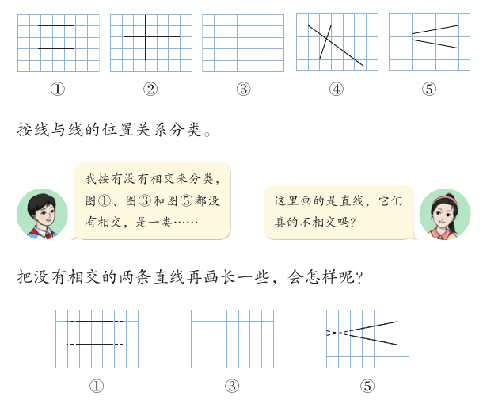
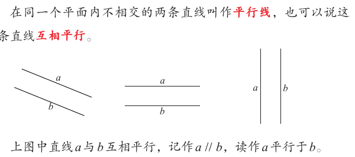
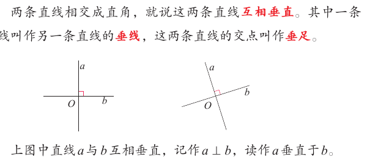
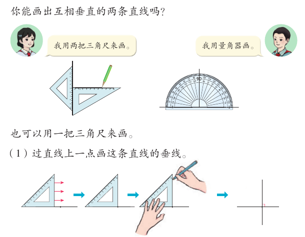
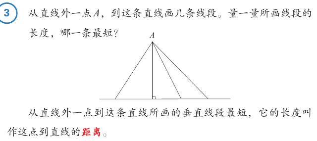
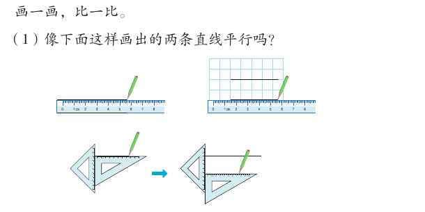
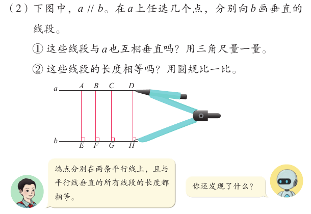
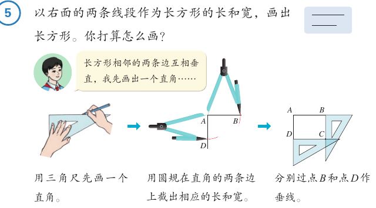

平行与垂直
在方格纸上任意画两条直线，会有几种情况？这一课，我们给两条直线的位置关系分类。我们还要学会画垂线、画平行线，找出“最短的路”。
学完本课，你能够：
01两条直线的位置关系
先说结论：在同一个平面内，两条直线只有两种情况：相交，或者不相交。判断时要记住，直线可以向两端无限延伸。

教材里有一个同学按“有没有相交”来分类，把图①、图③和图⑤分成一类。另一个同学提醒：这里画的是直线，它们真的不相交吗？把它们画长一些就知道了。
- 图①和图③中的两条直线，画长以后还是没有相交。
- 图⑤中的两条直线，画长以后相交了。
圆点只能停在方格的交点上。“相交成几度”由程序计算，取整数。
02平行线
先说结论：在同一个平面内，不相交的两条直线叫作平行线。
在同一个平面内不相交的两条直线叫作平行线，也可以说这两条直线互相平行。教材第 71 页

03互相垂直
先说结论：相交的情况还能再分。相交成直角的两条直线，叫作互相垂直。
教材第 71 页：一个同学把相交后有直角的分为一类，没有直角的分为一类。图②相交成直角，图④和图⑤相交但没有直角。
两条直线相交成直角，就说这两条直线互相垂直。其中一条直线叫作另一条直线的垂线，这两条直线的交点叫作垂足。教材第 71 页

读作 a 平行于 b。两条直线不相交。
读作 a 垂直于 b。两条直线相交成直角。
教材第 72 页让你把两根硬纸条相交，旋转其中一根，观察角度的变化。回到上面的方格纸演示，拖动一条直线的端点，看“相交成几度”怎样变。变到 90° 时，两条直线互相垂直。
04画垂线
先说结论：可以用两把三角尺画，可以用量角器画，也可以用一把三角尺画。教材详细画出了用一把三角尺的画法。

过直线上一点画垂线（看图说步骤）
- 把三角尺的一条直角边和直线重合。
- 沿着直线移动三角尺，让直角的顶点对准直线上的那一点。
- 按住三角尺，沿另一条直角边画线。
- 画好后，在垂足处标出直角符号。
教材第 73 页“做一做”第 1 题：分别过点 A 和点 B，画出直线 l 的垂线。点 A 在直线上，点 B 在直线外，两种画法都要会。
05点到直线的距离
先说结论：从直线外一点到这条直线画很多条线段，垂直的那条最短。

从直线外一点到这条直线所画的垂直线段最短，它的长度叫作这点到直线的距离。教材第 73 页
1 格看作 1 cm。长度由程序计算，保留一位小数。灰色的三条线段是固定的对照线段。
06画平行线
先说结论：用直尺沿方格纸的格线画，或者用两把三角尺推着画，都能画出平行线。

用两把三角尺画平行线（看图说步骤）
- 沿一把三角尺的一条边画一条直线。
- 用另一把三角尺靠紧第一把三角尺的另一条边，按住不动。
- 沿着第二把三角尺，推动第一把三角尺。
- 沿第一把三角尺原来那条边，再画一条直线。
教材第 74 页还做了一个实验：a // b，在 a 上任选几个点，分别向 b 画垂直的线段。然后问两个问题：这些线段与 a 也互相垂直吗？它们的长度相等吗？

1 格看作 1 cm。长度和角度由程序计算。“b 斜一点”是对照用的反例，不是教材里的图。
07画长方形
先说结论：长方形相邻的两条边互相垂直。所以画长方形可以先画一个直角，再画垂线。

- 用三角尺先画一个直角。
- 用圆规在直角的两条边上截出相应的长和宽。
- 分别过点 B 和点 D 作垂线。
两条垂线相交于点 C，长方形 ABCD 就画好了。教材还问：还可以怎样画？
08自测与速记
速记表
| 要点 | 一句话 |
|---|---|
| 位置关系 | 同一个平面内，两条直线要么相交，要么不相交（平行） |
| 平行线 | 同一个平面内不相交的两条直线；a // b |
| 互相垂直 | 两条直线相交成直角；a ⊥ b；交点叫垂足 |
| 画垂线 | 三角尺一条直角边和直线重合，移动，沿另一条直角边画 |
| 点到直线的距离 | 垂直线段最短，它的长度就是距离 |
| 平行线之间 | 和两条平行线都垂直的线段，长度都相等 |
| 画长方形 | 先画直角，截出长和宽，再分别画垂线 |
相关课程
教材：人教版《数学》四年级上册（2022 课标修订版）第五单元“平行四边形和梯形”第 70–77 页。标为“补充”的内容和模拟演示是课程作者的解释，不是教材原文。